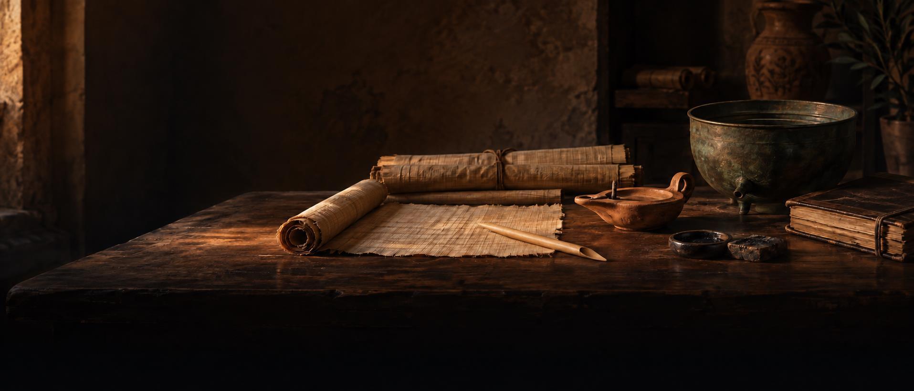
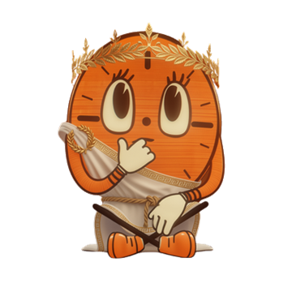

returning session
Continue with Ophthalmology.
14 questions answered today. Clepsydra’s vessel records every answer, including repeats: 42 of 100. It resets at local midnight.


returning session
14 questions answered today. Clepsydra’s vessel records every answer, including repeats: 42 of 100. It resets at local midnight.
